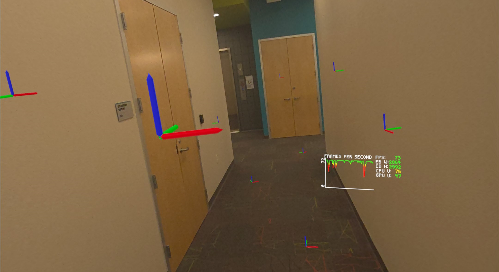

mixed reality lasertag prototype
An MR laser blaster game for Meta Quest 3.


I want mixed reality to be more than just a gimmick in games. I want games that don't just respond to your physical environment, but couldn't be possible without it. I also want games that encourage physical movement and real-life socializing.
This MR laser tag prototype is my effort to make such a game. It is a co-located multiplayer MR game that turns any physical space into a large-scale laser tag arena for you and your friends.
environment depth understanding

Laser bullets collide against the headset's live depth sensing, so there is no need for each user to spend time pre-scanning their environment. Players are meant to run around and duck behind their physical space.
This also comes with a major drawback. Players can't hit what the headset can't see; you can't shoot around corners or behind yourself. The convenience this technique offers outweighs this drawback.
colocation anchors

The game spatially calibrates headsets using Meta's shared anchor API. The game drops and syncs spatial anchors as players move around their space. The headsets constantly calibrate themselves to the few closest anchors.
third party art assets
These assets are placeholders until I create custom assets: